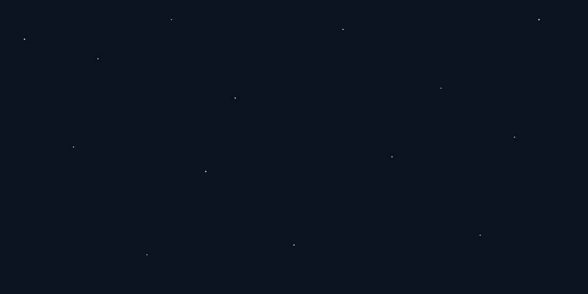

Misioni Ynë
Ky është një projekt vullnetar, i ndërtuar me pasion, i cili synon t'i ofrojë lexuesit shqiptar një burim të besueshëm dhe të strukturuar për të eksploruar mrekullitë shkencore.
Besojmë se dija dhe feja nuk bien ndesh me njëra-tjetrën. Përkundrazi, sa më shumë thellohemi në kuptimin e universit — qofshin ato yjet që ndriçojnë kozmosin apo qelizat që ndërtojnë jetën — aq më shumë zbulojmë shenjat e një Krijuesi të Urtë.
Vizioni ynë: Një platformë e hapur, e qartë dhe e bazuar në fakte, ku të rinjtë dhe të rriturit mund të lexojnë, të reflektojnë dhe të forcojnë besimin përmes shkencës.
Transparencë dhe Qasje
Ne ofrojmë përkufizime të thjeshta shkencore të shoqëruara gjithmonë me ajetin përkatës. Udhëzimet dhe fenomenet shkencore trajtohen në një gjuhë të thjeshtë pop-shkencore, në mënyrë që të jenë të kuptueshme nga çdo moshë.
- Burime të verifikuara: Çdo temë bazohet në parime të njohura shkencore.
- Përkthime të sakta: Përdorim përkthime të njohura dhe të pranuara të Kuranit në gjuhën shqipe (si p.sh. nga Feti Mehdiu).
- Kod i hapur: Projekti është me përmbajtje të hapur. Ne ftojmë çdo lexues ta kopjojë dhe ta shpërndajë materialin lirshëm.
Burimi i Hapur (Open Source)
Gjithçka që shihni këtu nuk mbrohet nga të drejtat e autorit për qëllime tregtare nga ana jonë. Qëllimi ynë i vetëm është shpërndarja e dijes.

Për çdo sugjerim, përmirësim, ose nëse dëshironi të kontribuoni, mos hezitoni të na kontaktoni përmes emailit ose rrjeteve sociale të listuara më poshtë.